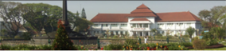
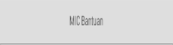
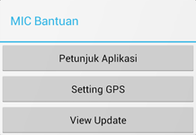
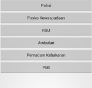
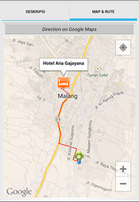

Tampilan
Keterangan

Header aplikasi yang berisi info tentang aplikasi.

Menu Kota Malang berisi beberapa informasi tentang Kota Malang.

Menu Telepon Penting menampilkan nomor-nomor penting untuk wilayah Kota Malang.
Menu Tempat Penting menampilkan informasi beberapa tempat, yaitu: Hotel, Kantor Polisi, Terminal & Stasiun, dan Pelayanan Umum.
Menu Rumah Sakit menampilkan informasi rumah sakit yang ada di Kota Malang.
Menu Pariwisata menampilkan informasi tempat pariwisata dan rekreasi di Kota Malang.
Menu Perguruan Tinggi menampilkan perguruan tinggi negeri dan swasta di Kota Malang.

Footer yang berisi bantuan aplikasi.

Pilihan bantuan aplikasi.

Button nomor penting, klik untuk men-dial nomor.

Klik marker lokasi untuk menmpilkan rute menuju lokasi.